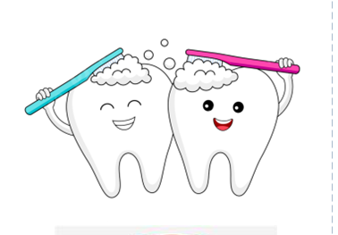

ความสำคัญของการดูแลสุขภาพช่องปาก
ปากคือประตูสู่สุขภาพ เป็นด่านแรกที่สำคัญในการเคี้ยว และกลืนอาหาร
จึงส่งผลต่อสภาวะโภชนาการ เพื่อให้ได้สารอาหารที่มีประโยชน์ต่อร่างกาย
ซึ่งมีผลต่อคุณภาพชีวิตทั้งทางกาย จิตใจ และสังคม
ทั้งในแง่การพูดสื่อสาร ความมั่นใจในการเข้าสังคม ภาพลักษณ์และความสวยงาม
อีกทั้งการติดเชื้อในช่องปากสามารถแพร่กระจายไปอวัยวะอื่นๆได้
จุดมุ่งหมาย
มีฟันที่ใช้งานได้อย่างน้อย 20 ซี่ หรือ 4 คู่สบฟันหลัง ไม่มีแผลหรือการอักเสบเรื้อรังในช่องปาก
